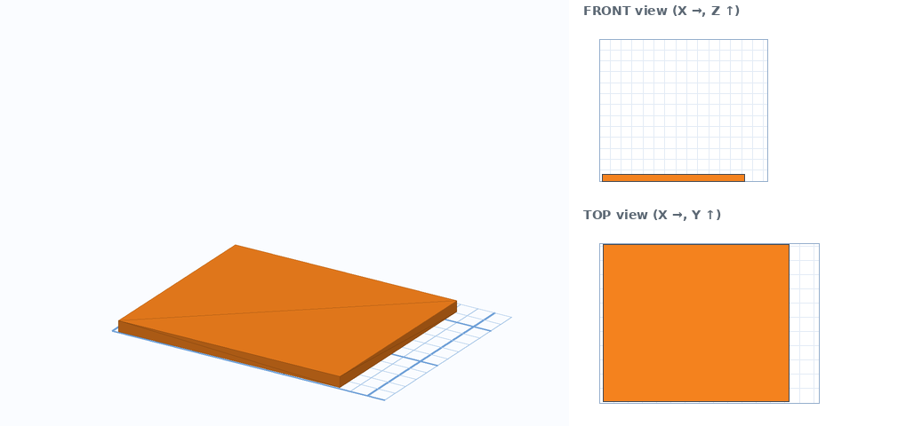
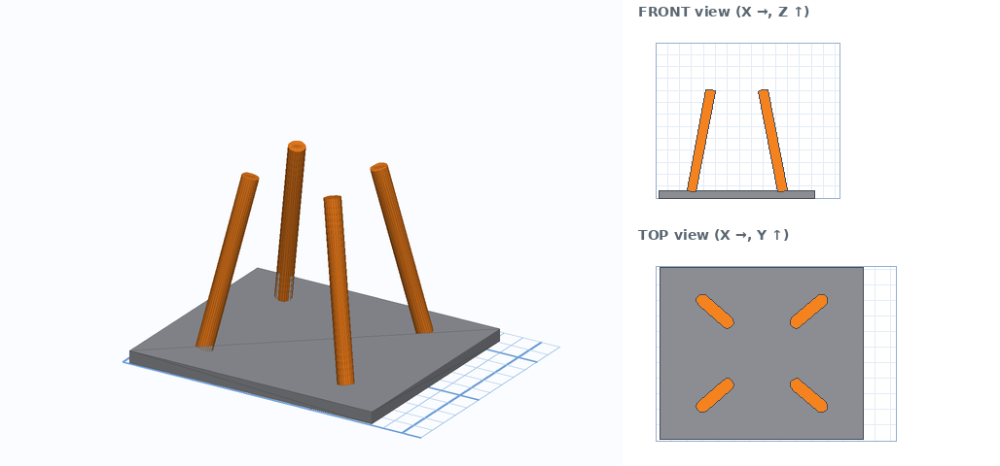
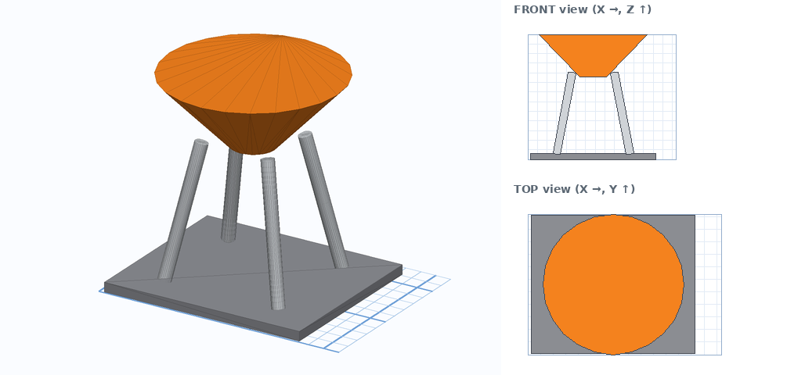
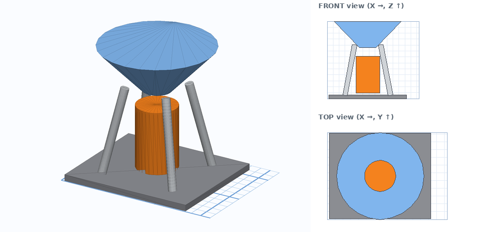
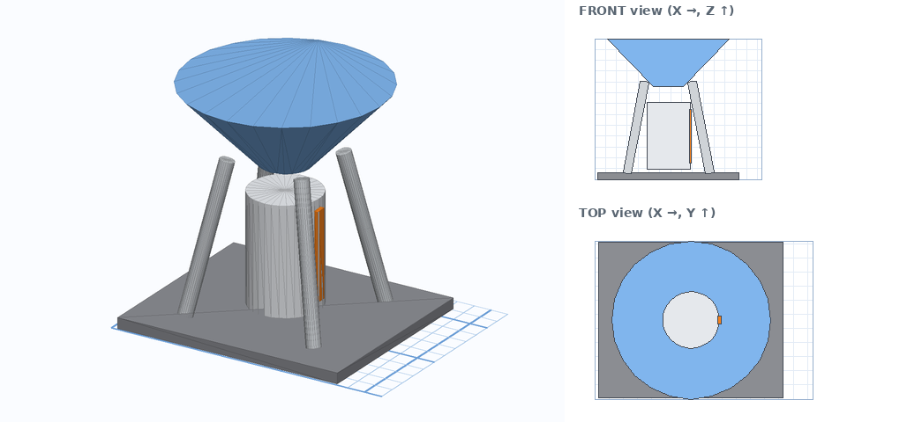
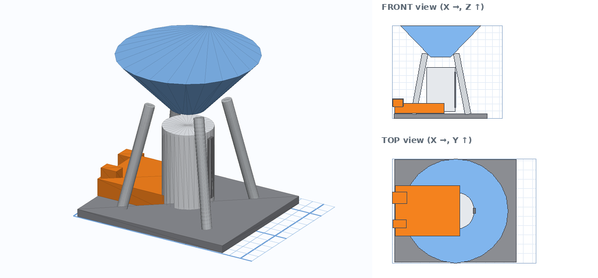
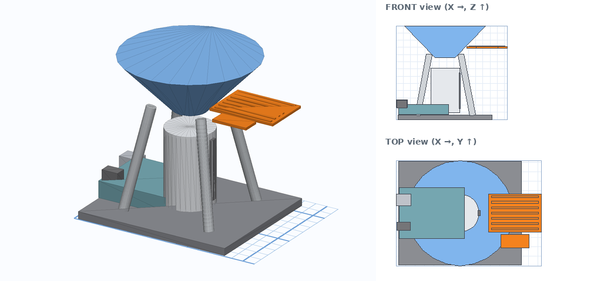
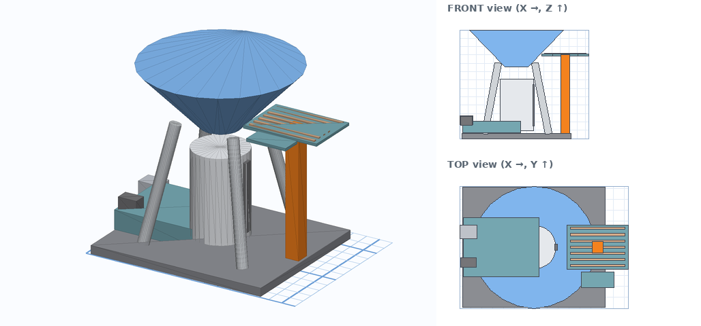
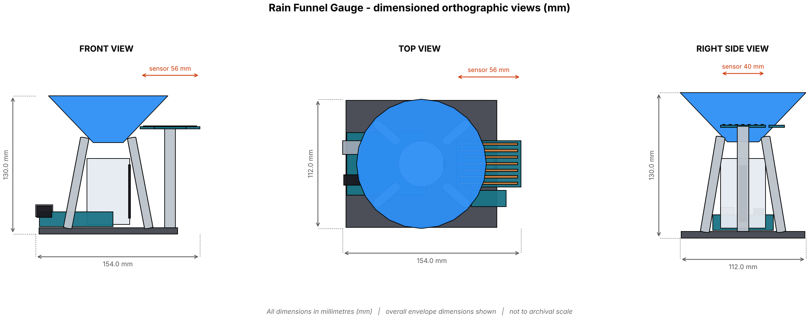

🎬 Watch the tutorial video
The whole build, animated step by step. Press space to pause, drag the bar to rewatch any step. Step numbers match the written guide below.
Tip: use the speed button (⚙) to slow the video to 0.5× while you copy the numbers. Download the video to watch offline.
Before you start
Orange = the part you are making now. Grey = parts you already made.
- Go to tinkercad.com, sign in and click Create → 3D Design.
- Bottom-right of the workplane set Snap grid to 1.0 mm.
- Click the Ruler tool (top of the shapes panel), then click the workplane to place its corner where the front-left corner of your model will be. That corner is X 0, Y 0. X goes to the right, Y goes away from you.
- Every shape table has Ruler X / Y / Z. X and Y are the distances from that corner to the nearest side of the shape. Z is how high the shape's lowest point sits above the workplane (black cone).
- Build the parts in order. Each step adds one orange part to the grey ones.

The steps
Tick each box when you finish a step. If you get stuck press Ctrl+Z and retry that step.
1Base plate
- Drag the shape from the Basic Shapes panel onto the workplane.
- Click it and type Size X, Y, Height (the white squares show the number boxes).
- If a Rotate is listed: click a curved arrow, type the angle. Picture is the judge: if it leans the wrong way type the same angle as a negative.
- Place it: with the Ruler at your corner type the X and Y distances, then click the black cone ▲ and type Z (height of its lowest point).
- Colour it grey so the next orange part stands out.

Orange = this step. Grey = already built. Right: front and top views, 10 mm grid.
| Part | Shape | Size (X × Y × Height) | Rotate | Ruler X / Y / Z | Notes |
|---|---|---|---|---|---|
| Base plate | Box | 130 × 110 × 6 | none | X 3 Y 1 Z 0 |
2Funnel leg ×4
Same routine as every step: drag, size, rotate (if listed), ruler X / Y, black cone Z, colour grey. Use the table below the picture.

Orange = this step. Grey = already built. Right: front and top views, 10 mm grid.
| Part | Shape | Size (X × Y × Height) | Rotate | Ruler X / Y / Z | Notes |
|---|---|---|---|---|---|
| Funnel leg 1 | Cylinder | 8 × 8 × 86.6 | Tip 14.2° (side arrow) then spin 41.2° (flat arrow) | X 26.1 Y 18.1 Z 5 | Sides/Steps 32. |
| Funnel leg 2 | Cylinder | 8 × 8 × 86.6 | Tip 14.2° (side arrow) then spin 318.8° (flat arrow) | X 26.1 Y 72.1 Z 5 | Sides/Steps 32. |
| Funnel leg 3 | Cylinder | 8 × 8 × 86.6 | Tip 14.2° (side arrow) then spin 138.8° (flat arrow) | X 86.1 Y 18.1 Z 5 | Sides/Steps 32. |
| Funnel leg 4 | Cylinder | 8 × 8 × 86.6 | Tip 14.2° (side arrow) then spin 221.2° (flat arrow) | X 86.1 Y 72.1 Z 5 | Sides/Steps 32. |
💡 These shapes are identical in size. Build the first one, then press Ctrl+D and only change the Rotate and Ruler / Z numbers for the others.
3Rain funnel
Same routine as every step: drag, size, rotate (if listed), ruler X / Y, black cone Z, colour grey. Use the table below the picture.

Orange = this step. Grey = already built. Right: front and top views, 10 mm grid.
| Part | Shape | Size (X × Y × Height) | Rotate | Ruler X / Y / Z | Notes |
|---|---|---|---|---|---|
| Rain funnel | Cone | 112 × 112 × 58.7 | none | X 12 Y 0 Z 86 | Make the cone 58.7 tall, then add a Hole Box over its top that leaves only 44 mm of cone. Group them. The wide end is at the top: flip the cone upside down (rotate 180°) first. |
4Collector tube
Same routine as every step: drag, size, rotate (if listed), ruler X / Y, black cone Z, colour grey. Use the table below the picture.

Orange = this step. Grey = already built. Right: front and top views, 10 mm grid.
| Part | Shape | Size (X × Y × Height) | Rotate | Ruler X / Y / Z | Notes |
|---|---|---|---|---|---|
| Collector tube | Cylinder | 40 × 40 × 62 | none | X 48 Y 36 Z 9 | Sides/Steps 32. |
5Collector scale
Same routine as every step: drag, size, rotate (if listed), ruler X / Y, black cone Z, colour grey. Use the table below the picture.

Orange = this step. Grey = already built. Right: front and top views, 10 mm grid.
| Part | Shape | Size (X × Y × Height) | Rotate | Ruler X / Y / Z | Notes |
|---|---|---|---|---|---|
| Collector scale | Box | 2 × 6 × 50 | none | X 87 Y 53 Z 15 |
6Arduino Uno R3 + breadboard ×3
Same routine as every step: drag, size, rotate (if listed), ruler X / Y, black cone Z, colour grey. Use the table below the picture.

Orange = this step. Grey = already built. Right: front and top views, 10 mm grid.
| Part | Shape | Size (X × Y × Height) | Rotate | Ruler X / Y / Z | Notes |
|---|---|---|---|---|---|
| Arduino Uno board | Box | 69 × 54 × 14 | none | X 3.5 Y 29 Z 7 | |
| Arduino USB port | Box | 16 × 12 × 11 | none | X 0 Y 64 Z 16.5 | |
| Arduino power jack | Box | 14 × 9 × 11 | none | X 1 Y 37.5 Z 15.5 |
7Raindrop sensor board ×9
Same routine as every step: drag, size, rotate (if listed), ruler X / Y, black cone Z, colour grey. Use the table below the picture.

Orange = this step. Grey = already built. Right: front and top views, 10 mm grid.
| Part | Shape | Size (X × Y × Height) | Rotate | Ruler X / Y / Z | Notes |
|---|---|---|---|---|---|
| Rain plate | Box | 56 × 40 × 2 | none | X 98 Y 36 Z 99 | |
| Rain control PCB | Box | 30 × 14 × 2 | none | X 111 Y 19 Z 99 | |
| Rain trace 0 | Box | 50 × 2 × 0.8 | none | X 101 Y 38 Z 100.9 | |
| Rain trace 1 | Box | 50 × 2 × 0.8 | none | X 101 Y 43.7 Z 100.9 | |
| Rain trace 2 | Box | 50 × 2 × 0.8 | none | X 101 Y 49.4 Z 100.9 | |
| Rain trace 3 | Box | 50 × 2 × 0.8 | none | X 101 Y 55.1 Z 100.9 | |
| Rain trace 4 | Box | 50 × 2 × 0.8 | none | X 101 Y 60.8 Z 100.9 | |
| Rain trace 5 | Box | 50 × 2 × 0.8 | none | X 101 Y 66.5 Z 100.9 | |
| Rain trace 6 | Box | 50 × 2 × 0.8 | none | X 101 Y 72.2 Z 100.9 |
💡 These shapes are identical in size. Build the first one, then press Ctrl+D and only change the Rotate and Ruler / Z numbers for the others.
8Sensor bracket
Same routine as every step: drag, size, rotate (if listed), ruler X / Y, black cone Z, colour grey. Use the table below the picture.

Orange = this step. Grey = already built. Right: front and top views, 10 mm grid.
| Part | Shape | Size (X × Y × Height) | Rotate | Ruler X / Y / Z | Notes |
|---|---|---|---|---|---|
| Sensor bracket | Box | 10 × 10 × 94 | none | X 121 Y 51 Z 6 |
9Compare with the teacher's model
- Download DS9_CA2_CHOSEN_RainFunnelGauge_FINAL.stl.
- In Tinkercad click Import → choose the file → units mm → Import.
- Give the imported model a different colour, select both models and use Align (L) on X, Y and Z with the middle dots.
- Look for anything that sticks out. A difference under about 2 mm is fine. A bigger gap means a number was typed wrongly in that part's step.
10Capture the three views
- Click FRONT on the view cube. If you can right-click the cube, switch on Orthographic. Take a screenshot.
- Click TOP. Screenshot.
- Click RIGHT. Screenshot.
- Paste the three screenshots on one page in Slides or Docs and crop them.

Model answer: front, top and right views with dimensions.
11Add the dimensions
Draw arrows with the line tool and type the sizes. Overall size: 154 × 112 × 130 mm (length × width × height). Then label every part, for example:
| Part | Shape and size (mm) |
|---|---|
| Base plate | Box 130 × 110 × 6 |
| Funnel leg | Cylinder 8 × 8 × 86.6, Cylinder 8 × 8 × 86.6, Cylinder 8 × 8 × 86.6 … |
| Rain funnel | Cone 112 × 112 × 58.7 |
| Collector tube | Cylinder 40 × 40 × 62 |
| Collector scale | Box 2 × 6 × 50 |
| Arduino Uno R3 + breadboard | Box 69 × 54 × 14, Box 16 × 12 × 11, Box 14 × 9 × 11 |
| Raindrop sensor board | Box 56 × 40 × 2, Box 30 × 14 × 2, Box 50 × 2 × 0.8 … |
| Sensor bracket | Box 10 × 10 × 94 |
12Save and export
- Rename the design to Rain Funnel Gauge – your name.
- Click Export → .STL. This is the file a 3D printer slicer uses.
- For a laser-cut part also export .SVG (a flat outline).
- Upload the STL and your 2D drawing where your teacher tells you.
🧠 Tinkercad skills quiz — Rain Funnel Gauge
Only about building in Tinkercad: shapes, sizes, handles, shortcuts, exports. Timed and auto-marked; your score is saved to the class sheet when you are logged in above. Read all four options: they are written to look alike.
🏁 Ready to play?
10 questions · 15 seconds each · explanations after every answer.